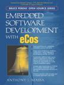

The latest eCos news is located on the home page.
| November 21, 2008 | ColdFire hardware support
eCosCentric has contributed architectural support for eCos on ColdFire processors from their eCosPro offering. The contribution includes platform-level support for the M5272C3 evaluation board, plus ethernet and serial drivers. The code is only available from the CVS repository at this time. |
| November 03, 2008 | Cortex-M3 hardware support
eCosCentric has contributed architectural support for eCos on the ARM Cortex-M3 core. The contribution includes platform-level support for the STM3210E-EVAL evaluation board, STM32 flash and serial drivers, plus Linux- and Cygwin-hosted GNU toolchains. The code is only available from the CVS repository at this time. See the contribution announcement for further details. |
| October 08, 2008 | Framebuffer infrastructure
eCosCentric has contributed framebuffer device infrastructure from their eCosPro offering to eCos. The code and documentation are only available from the CVS repository at this time. |
| August 09, 2008 | ADC infrastructure
eCosCentric has contributed ADC (Analog to Digital Converter) device infrastructure from their eCosPro offering to eCos. The code and documentation are only available from the CVS repository at this time. |
| July 11, 2006 | Host tools
eCosCentric has generated new unsupported snapshot builds of the eCos host tools that workaround an exception handling issue with Cygwin 1.5.19 and 1.5.20. Download and installation instructions are available. |
| April 20, 2005 | I2C infrastructure
eCosCentric has contributed I2C (Inter-Integrated Circuit) bus infrastructure from their eCosPro offering to eCos. The code and documentation are only available from the CVS repository at this time. |
| August 24, 2004 | SPI infrastructure
eCosCentric has contributed SPI (Serial Peripheral Interface) bus infrastructure from their eCosPro offering to eCos. The code and documentation are only available from the CVS repository at this time. |
| April 14, 2004 | PPP stack
eCosCentric has contributed a PPP stack based on FreeBSD source code. It is designed to be used in conjunction with the existing FreeBSD TCP/IP stack. |
| February 04, 2004 | eCos and RedBoot training course
eCosCentric has announced a public eCos and RedBoot training course which will be delivered on a periodic basis. The first course will be held in Cambridge, UK, April 19-22, 2004. |
| January 13, 2004 | Red Hat contributes eCos copyright to Free Software Foundation
Red Hat today announced their intention to transfer all their copyright in eCos to the Free Software Foundation. This will consolidate the legal standing of eCos, and is a great benefit to the eCos community. As eCos transitions to becoming an FSF project, there will be a number of changes, especially to the copyright assignment process for new contributions among other things. Please bear with us during this transitional period as we make updates. |
| September 19, 2003 | IBM PowerPC 405GP support
The PPC40x variant support has been improved, adding fairly complete support for the 405GP. Note: although the PC40x variant has been in our tree for years, it has not been used by any published platforms. This is the first public platform to use the PPC40x framework is the new MOAB development board, from Test & Measurement Systems. See Supported Hardware for more details. |
| August 19, 2003 | Improved Motorola Power-QUICC2 support
The QUICC2 variant support has been reworked as mpc8xxx and should now be more flexible for platforms based on these new devices. The first port to take advantage of this new layout is support for the new Analogue & Micro Rattler, which is outfitted with either a MPC8250 or MPC8270. See Supported Hardware for more details. |
| May 20, 2003 | eCos 2.0 final release
We are pleased to announce the availability of the eCos 2.0 final release. This is the first fully-packaged stable release since eCos 1.3.1 back in March 2000. Thank you to all those who helped in the push to make this release. There are many minor improvements to the eCos Configuration Tool in particular since the beta release and we recommend that all eCos developers switch to the latest version of this tool. Please refer to the downloading and installation page for details of how to get started with eCos 2.0. The complete release is also available on CD-ROM from eCosCentric. |
| Mar 17, 2003 | eCos 2.0 beta release
We are pleased to announce the availability of the eCos 2.0 beta release. This fully-packaged release contains many of the recent net contributions which have previously been available by via anonymous CVS only. We have also created an installation tool which simplifies downloading and installation. We need your help in evaluating and testing this beta release on a wide variety of hardware platforms. We have prepared a set of testing guidelines to assist you in providing the feedback we need. Thank you! |
| Feb 28, 2003 | New eCos board ports
In recent months, eCos has been ported to a number of new platforms. Some of these were contributed and others made by the eCos maintainers. These new ports include:
|
| Feb 02, 2003 | eCos meeting at FOSDEM 2003
There is to be an eCos session at FOSDEM 2003, taking place on Saturday 8th and Sunday 9th February at the Université Libre de Bruxelles (Brussels, Europe). It will be attended by four of the eCos maintainers, and will be shortly after a presentation by Nick Garnett to the FOSDEM embedded track about eCos. More details are available from the messages to the eCos announce mailing list. |
| Dec 21, 2002
 |
Embedded Software Development with eCos by Anthony J. Massa
Finally we have our first book on eCos, Embedded Software Development with eCos, published by Prentice Hall as part of the Bruce Perens Open Source Series. Author Anthony J. Massa covers eCos architecture, installation, configuration, coding, deployment, and the entire ecos development platform, including support components. Extensive code examples and a full application case study demonstrate every key programming concept, including exceptions, interrupts, virtual vectors, threads, synchronization, networking, web connectivity, debug/bootstrap, and even porting eCos to new hardware. This book can be found at any good technical book store, or alternatively can be ordered online directly from the publisher, from Barnes & Noble, from Amazon, or many other online book stores. |
| May 23, 2002 | eCos v2 alpha code available from anonymous CVS
Red Hat has updated the anonymous CVS repository with the code for an alpha quality release of eCos v2.0. Information about the contents can be found in this mailing list post. As part of this, eCos will have a new licence in future. Read this mailing list post for more details. A beta version of eCos v2.0 is being prepared. |
| April 3, 2002 | lwIP ported to eCos
Jani Monoses at Astechnix SRL has announced an early port of the lwIP lightweight TCP/IP stack to eCos. An EPK is available. |
| January 3, 2002 | eCos Porting Guide featured in Embedded.com
Anthony Massa has written an eCos Porting Guide article for the January 2002 issue of Embedded Systems Programming magazine. |
| October 12, 2001 | 3G LAB announce availability of eCos/M3 extensions
As part of the eCos/M3 (MobileMultiMedia) initiative 3G LAB have released the first draft of the M3 extensions for eCos. These extensions include support for ELF shared libraries, run-time linking, memory protection and partial POSIX process emulation among many other features. More information and downloads are available from the 3G LAB eCos developer resources page. |
| August 1, 2001 | Playstation 2 and Dreamcast port integration
Red Hat is in the process of integrating Yaegashi Takeshi's ports to the Sony Playstation 2 and Sega Dreamcast, as previously mentioned on the contributions page. Expect to see it soon! |
| July 31, 2001 | AT91 EB40 port
eCos has now been enhanced with a port to the Atmel AT91-based EB40 evaluation board. This port, currently a beta, includes RedBoot support, and Flash and Serial drivers. Sources are available from anonymous CVS. More details including prebuilt RedBoot binaries are available here. |
| June 10, 2001 | x86 HAL improvements and RedBoot support
The existing x86 support has been reorganized and the PC target has been enhanced with PCI and RedBoot support. Networking support for Intel EtherExpress Pro compatible network cards has been added, including downloading and debugging via RedBoot. The Linux synthetic target has been separated out into a separate HAL and also been improved in many ways. Sources are available from anonymous CVS. |
| June 1, 2001 | eCos Configuration Tool 2 Alpha released!
Red Hat are pleased to announce an alpha release of the eCos Configuration Tool version 2.0. This is a cross-platform version built using the wxWindows toolkit. The tool uses the GTK+ widget set on Linux, and the WIN32 API on Windows 9x, Windows NT and Windows 2000. It is similar to the MFC, Windows-only version but at present lacks a few of its features, such as the Memory Layout Tool and the ability to run tests from within the tool. More information and downloads are available here. |
| May 18, 2001 | Analogue & Micro PowerPC 860T "Viper" port
Both eCos and RedBoot have been ported to the Analogue & Micro PowerPC 860T Viper board, including Flash and Fast Ethernet support. Sources are available from anonymous CVS. |
| April 26, 2001 | Bright Star Engineering commEngine port
eCos and RedBoot have been ported to the Bright Star Engineering commEngine StrongARM SA1110 board, including Flash, watchdog, serial, ethernet drivers and PCI support. Sources are available from anonymous CVS. |
| April 7, 2001 | Site updated
We've given parts of this site a new look, particularly the Supported Hardware section, and added a new area dedicated to RedBoot. Let us know what you think! |
| April 6, 2001 | New eCos and RedBoot ports
Again Red Hat and the eCos community have been working hard to deliver more new ports and features to eCos and RedBoot. Here's a highlight of new functionality we've added. More details can be found in the eCos NEWS file.
|
| February 15, 2001 | Intel® Xscale[tm] IQ80310 port
A port to the Intel® XScale[tm] IQ80310 Software Development and Processor Evaluation Kit has been added. The port includes flash and ethernet drivers, and support for RedBoot, Red Hat's bootstrap firmware. The status of the port is currently beta. As an Open Source company, Red Hat has made these improvements available from the development repository via anonymous CVS including RedBoot documentation. Tool binaries and sources are available from ftp://ftp.redhat.com/redhat/gnupro/ or (preferably) a mirror site. |
| February 13, 2001 | USB slave support
Red Hat has added support for USB slave devices to eCos, the Embedded Configurable Operating System. This includes generic USB slave support, a device driver for the Intel StrongARM SA11x0 on-chip USB device, and an additional support package for developing USB-ethernet and similar peripherals. These improvements are available from the development repository via anonymous CVS including documentation. |
| Septermber 18, 2000 | Recent updates
Red Hat has recently added other significant features to eCos, currently only available from the anonymous CVS development repository. Key additions to generic eCos functionality include:
Support for the following new platforms and peripherals has also been added:
The complete list of supported targets has been updated accordingly. A more detailed announcement of all these developments is available in the archives of the ecos-announce mailing list. |